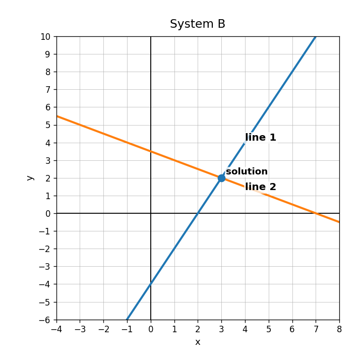

Practice Set 3.1.2
What type of solution does a system have when two lines intersect once?
Does $(3,2)$ satisfy both $y=2x-4$ and $y=-\frac{1}{2}x+\frac{7}{2}$?
Solve using elimination.
$$\begin{aligned}2x+y&=11\-2x+3y&=5\end{aligned}$$
Use the graph to explain why the ordered pair shown is the solution to both equations.

Does the cooling data show a positive or negative association?

In the model $T=-3.5m+84$, what does the negative slope tell you?
Does the weak association graph look useful for precise predictions? Why or why not?

For $S=3h+67$, estimate $S$ when $h=4$.
Use the cooling model to estimate the temperature after 6 minutes.
A model predicts 35, and the actual data value is 31. Find and interpret the residual.
Explain why a scatterplot with a weak association should make you cautious about predictions.
A student says, “The line of fit touches two points, so every prediction must be correct.” Revise the statement to be mathematically accurate.
Which grows faster: $y=12x+5$ or $y=7x+40$?
Which starts higher: $P=4t+36$ or $Q=9t+8$?
Compare the table to $y=6x+15$. Which relationship has the greater starting value? Which has the greater rate?
| $x$ | 0 | 1 | 2 | 3 |
|---|---|---|---|---|
| Table A | 24 | 29 | 34 | 39 |
Explain how one linear relationship can start higher, but another can become greater later.